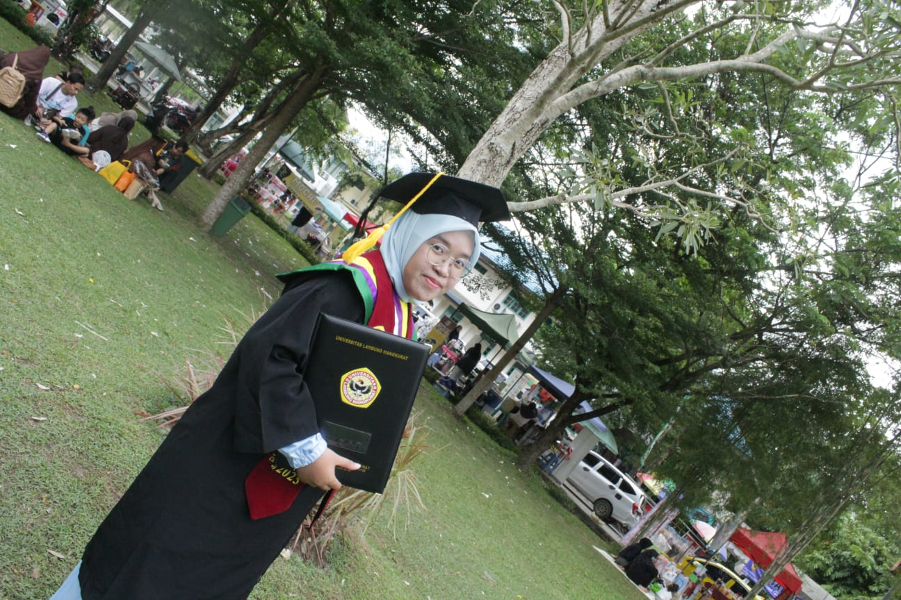

Portfolio ini adalah cermin perjalanan saya selama PPL Terbimbing di SMK Negeri 1 Banjarmasin — dari ruang orientasi, laboratorium komputer, hingga selesainya PPL Terbimbing saya. Di sini, saya mendokumentasikan bukan hanya apa yang berhasil, tetapi juga apa yang belum sempurna — karena itulah inti dari menjadi guru yang terus bertumbuh.

Mahasiswa Program PPG Calon Guru Bidang Informatika, Universitas Lambung Mangkurat.
Mendidik bukan tentang mengisi ember yang kosong — melainkan tentang menyalakan api yang sudah ada di dalam diri setiap anak.
Setiap halaman mendokumentasikan satu aspek perjalanan PPL Terbimbing saya secara menyeluruh.